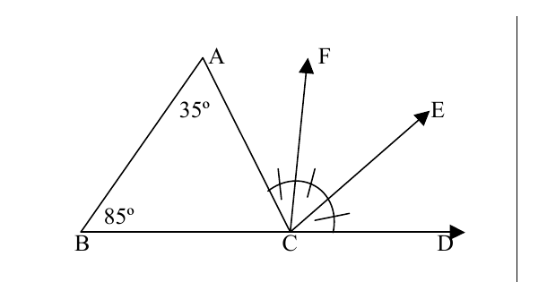
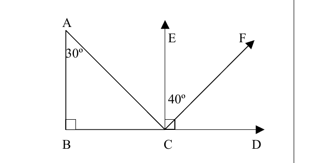
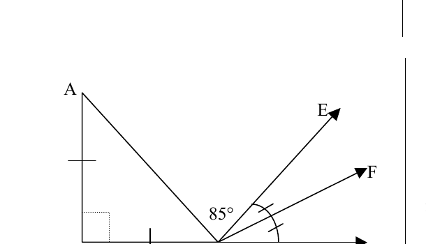
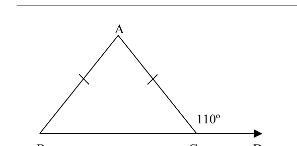
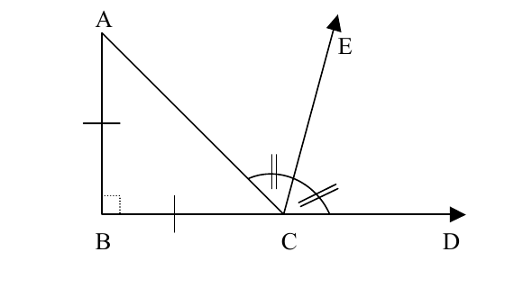
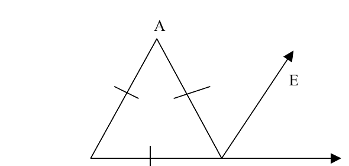
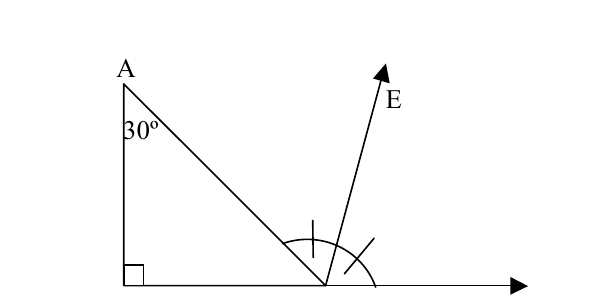
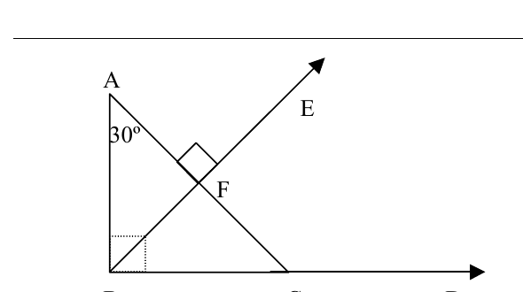

Ejercicio 1 · página 3
Halla m∠ACB, m∠ACF, m∠ACD, m∠FCD, m∠FCE, m∠BCE y m∠BCF.
La hoja también imprime m∠ADE. Esa etiqueta no corresponde a un ángulo del dibujo porque D no es el vértice; revisa ese inciso con tu docente.
Mostrar espacios de respuesta
m∠ACB = ____ · m∠ACF = ____ · m∠ACD = ____ · m∠FCD = ____ · m∠FCE = ____ · m∠BCE = ____ · m∠BCF = ____

Halla los ángulos que pide la hoja. En el segundo inciso aparece m∠ACE por segunda vez; por la figura, probablemente se refiere a m∠ACF.
m∠ACE, (m∠ACE repetido en la hoja), m∠FCD, m∠ACD, m∠BCF, m∠ACB, m∠BCD y m∠BCE.
Mostrar espacios de respuesta
m∠ACE = ____ · m∠ACF (segundo inciso, según la figura) = ____ · m∠FCD = ____ · m∠ACD = ____ · m∠BCF = ____ · m∠ACB = ____ · m∠BCD = ____ · m∠BCE = ____

Halla m∠ACB, m∠ACF, m∠ECF, m∠ECD, m∠ACD, m∠BCE, m∠BCF y m∠BAC.
Mostrar espacios de respuesta
m∠ACB = ____ · m∠ACF = ____ · m∠ECF = ____ · m∠ECD = ____ · m∠ACD = ____ · m∠BCE = ____ · m∠BCF = ____ · m∠BAC = ____

Halla m∠ABC, m∠ACB, m∠CBA y m∠BCD.
Mostrar espacios de respuesta
m∠ABC = ____ · m∠ACB = ____ · m∠CBA = ____ · m∠BCD = ____

Halla m∠ABC, m∠ACB, m∠CBA, m∠ACD, m∠BCD y m∠ACE.
Mostrar espacios de respuesta
m∠ABC = ____ · m∠ACB = ____ · m∠CBA = ____ · m∠ACD = ____ · m∠BCD = ____ · m∠ACE = ____

Halla m∠ABC, m∠ACB, m∠BCD y m∠ACE.
Mostrar espacios de respuesta
m∠ABC = ____ · m∠ACB = ____ · m∠BCD = ____ · m∠ACE = ____

Halla m∠ABC, m∠ACB, m∠CBA, m∠ACD, m∠BCD y m∠ACE.
Mostrar espacios de respuesta
m∠ABC = ____ · m∠ACB = ____ · m∠CBA = ____ · m∠ACD = ____ · m∠BCD = ____ · m∠ACE = ____

Halla m∠ABC, m∠ACB, m∠CBF, m∠ACD, m∠BCD y m∠AFE.
Mostrar espacios de respuesta
m∠ABC = ____ · m∠ACB = ____ · m∠CBF = ____ · m∠ACD = ____ · m∠BCD = ____ · m∠AFE = ____
Recordatorio
Usa la suma de los ángulos interiores (180°), los ángulos rectos (90°), los ángulos exteriores y las marcas de lados o arcos iguales del dibujo. Intenta resolverlos antes de consultar tu cuaderno.